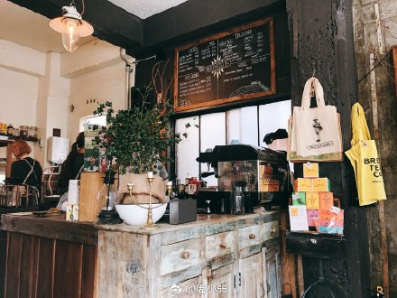
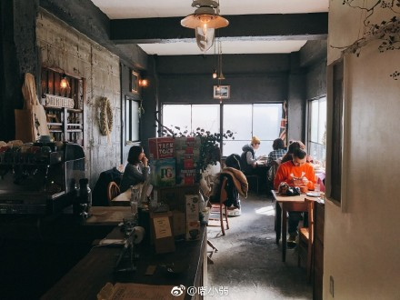
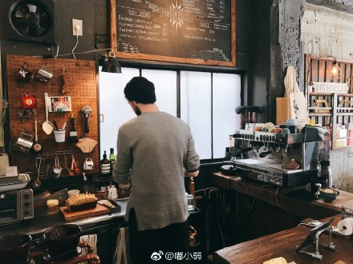

20 SEP
拍摄制作
更全面的医术视频制作方案
3D 医学动画
医术网拥有专业的医学3D制作团队，可为医生、医院、教学单位制作专业的医学动画，该团队由医学3D设计、医学指导、医学编辑、医学翻译等组成，而对应分科医学指导人员一跟到底，直到项目完成。医学动画基本适应于医学领域的每一个分支， 例如：病理分析、药理作用机制、模拟手术方案、医疗事故复原模拟、人体类知识科学普及、医学挂图、医学教科研课题类动画视频、对手术过程进行具象、科学的动画还原，广泛用于教育培训等领域。
.jpg)
.jpg)
.jpg)
.jpg)
.jpg)
.jpg)
出版 推广
更权威的出版与推广渠道。
医术网拥有最权威的出版与推广渠道
医术网拥有专业的策划制作团队、用最市场化的标准予以策划、包装，以最佳的形式得以呈现。最具权威的出版推广渠道，让优秀的手术视频得以传播、传承，助力中青年医生更好更快的成长。
制作出版
医术网与多家出版社建立了长期的合作关系，为所拍摄的2D和3D手术视频资料提供出版服务，便于医务工作者授课展示，提升教学效率，也可为慕课（MOOC）平台提供可视化教材。
线上推广
医术网的编辑策划团队，通过专家专栏、厂商专题、进修项目、线上比赛、奖项评选、会议新闻、话题讨论等方式，为医务工作者在医术网、医术网公众号、医术网APP上进行推广。
3D/VR 直播
全面、完善的手术直播和录播系统，是临床手术录制和手术观摩的最佳解决方案。专家与手术室互动交流更加直接，有效的指导手术进行;透过互联网也可远程进行手术直播示教或进行专家会诊;手术录播系统实时录制，可做为手术直播示教，医学专家研究，在线学习等，各种不同应用的解决方案。
功能概述
灵活多功能的医疗级摄像机，可以提供高清晰的图像让手术观摩者在示教室观看，可以与手术室的视频设备如腔镜等进行对接，实现微创手术直播教学；可以实现手术室与示教室之间的实时互动交流；可以根据医院的实际情况以及需求实现标清，高清以及全高清质量的手术直播以及手术录制。
手术直播
手术观摩过程中示教室能够远端控制调整手术室镜头角度和焦距，以获得更佳的视野；示教室也可以对手术室中的多路医疗设备的视频进行远端切换控制；手术观摩者可以透过示教系统与手术室进行双向的语音视频同步交流和互动；示教室可以实现标清、高清、全高清等多种视频信号的手术观摩。
示教室教学
3D 设备接入
医术网支持在手术室接入da VinciSi机器人、3D磁导航、STORZ 3D腔镜
Olympus 3D腔镜、Viking 3D腔镜及各种3D显微镜、3D内镜、3D彩超等
可为医院、教学单位提供全面的3D技术支持。

da VinciSi机器人
3D采集成像
用两路SDI 1080P传输左右眼的视频，通过我们的编码器合成为左右格式来实现3D画面，在示教室再对左右格式进行分解，用不同偏振态的镜片分别过滤掉其中一幅图像实现3维立体。

STORZ 3D腔镜
3D采集成像
结合腔镜手术和3D视频传输的要求和特点，在吊臂上安装一台专业24寸3D腔镜医用显示器用来显示3D腔镜视频。
Olympus 3D腔镜
3D采集成像
采用进口专业的3D视频采集卡，高效标准3d算法视频处理，H264压缩编码，压缩比更高，输出标准的3D左右格式或上下格式的MP4录像文件。

3D磁导航
3D磁导航系统
3D磁导航通过具有三维成像功能的磁导航数字平板心血管造影系统，以磁场来引导磁导管的偏转及行进方向。
互联网 直播
医术网拥有基于互联网的手术直播技术，便于医院、教学单位进行跨城乃至跨国远程会诊、讲座与培训。

医术 教学导播系统
医术网研发的医术教学导播系统2.0版，是带有实时导播功能的医术直播教学软件。可直接接入手术室3D信号，广泛应用于院内教学、远程指导、学术会议等场合。

慕课解决方案
慕课（MOOC）是大规模在线开放课程（Massive Open Online Course）的缩写，医术网可为医院、教学单位提供慕课软件解决方案，打造一个可供医生免费注册使用的在线教育平台。

联系 我们
医术网是面向医生的专业交流和分享网站，旨在帮助中国医生更好的成长，打造属于医生的专属平台。